The goal of nlmixr2plot is to provide the nlmixr2 core estimation routines.
Installation
You can install the development version of nlmixr2plot from GitHub with:
# install.packages("remotes")
remotes::install_github("nlmixr2/nlmixr2data")
remotes::install_github("nlmixr2/lotri")
remotes::install_github("nlmixr2/rxode2")
remotes::install_github("nlmixr2/nlmixr2est")
remotes::install_github("nlmixr2/nlmixr2extra")
remotes::install_github("nlmixr2/nlmixr2plot")For most people, using nlmixr2 directly would be likely easier.
library(nlmixr2est)
#> Loading required package: nlmixr2data
library(nlmixr2plot)
## The basic model consists of an ini block that has initial estimates
one.compartment <- function() {
ini({
tka <- 0.45 ; label("Log Ka")
tcl <- 1 ; label("Log Cl")
tv <- 3.45 ; label("Log V")
eta.ka ~ 0.6
eta.cl ~ 0.3
eta.v ~ 0.1
add.sd <- 0.7
})
# and a model block with the error specification and model specification
model({
ka <- exp(tka + eta.ka)
cl <- exp(tcl + eta.cl)
v <- exp(tv + eta.v)
d/dt(depot) = -ka * depot
d/dt(center) = ka * depot - cl / v * center
cp = center / v
cp ~ add(add.sd)
})
}
## The fit is performed by the function nlmixr/nlmix2 specifying the model, data and estimate
fit <- nlmixr2(one.compartment, theo_sd, est="saem", saemControl(print=0))
#> ℹ parameter labels from comments are typically ignored in non-interactive mode
#> ℹ Need to run with the source intact to parse comments
#> → loading into symengine environment...
#> → pruning branches (`if`/`else`) of saem model...
#> ✔ done
#> → finding duplicate expressions in saem model...
#> [====|====|====|====|====|====|====|====|====|====] 0:00:00
#> → optimizing duplicate expressions in saem model...
#> [====|====|====|====|====|====|====|====|====|====] 0:00:00
#> ✔ done
#> ℹ calculate uninformed etas
#> ℹ done
#> rxode2 5.0.1 using 11 threads (see ?getRxThreads)
#> no cache: create with `rxCreateCache()`
#>
#> Attaching package: 'rxode2'
#> The following objects are masked from 'package:nlmixr2est':
#>
#> boxCox, yeoJohnson
#> Calculating covariance matrix
#> [====|====|====|====|====|====|====|====|====|====] 0:00:00
#> → loading into symengine environment...
#> → pruning branches (`if`/`else`) of saem model...
#> ✔ done
#> → finding duplicate expressions in saem predOnly model 0...
#> [====|====|====|====|====|====|====|====|====|====] 0:00:00
#> → finding duplicate expressions in saem predOnly model 1...
#> [====|====|====|====|====|====|====|====|====|====] 0:00:00
#> → optimizing duplicate expressions in saem predOnly model 1...
#> [====|====|====|====|====|====|====|====|====|====] 0:00:00
#> → finding duplicate expressions in saem predOnly model 2...
#> [====|====|====|====|====|====|====|====|====|====] 0:00:00
#> ✔ done
#> → Calculating residuals/tables
#> ✔ done
print(fit)
#> ── nlmixr² SAEM OBJF by FOCEi approximation ──
#>
#> Gaussian/Laplacian Likelihoods: AIC() or $objf etc.
#> FOCEi CWRES & Likelihoods: addCwres()
#>
#> ── Time (sec $time): ──
#>
#> setup covariance saem table other
#> elapsed 0.001322 0.006017 3.196 0.062 1.780661
#>
#> ── Population Parameters ($parFixed or $parFixedDf): ──
#>
#> Parameter Est. SE %RSE Back-transformed(95%CI) BSV(CV%) Shrink(SD)%
#> tka Log Ka 0.464 0.195 42 1.59 (1.09, 2.33) 71.1 -0.0900%
#> tcl Log Cl 1.01 0.085 8.43 2.74 (2.32, 3.24) 27.4 4.80%
#> tv Log V 3.46 0.0447 1.29 31.7 (29, 34.6) 13.1 8.77%
#> add.sd 0.696 0.696
#>
#> Covariance Type ($covMethod): linFim
#> No correlations in between subject variability (BSV) matrix
#> Full BSV covariance ($omega) or correlation ($omegaR; diagonals=SDs)
#> Distribution stats (mean/skewness/kurtosis/p-value) available in $shrink
#> Censoring ($censInformation): No censoring
#>
#> ── Fit Data (object is a modified tibble): ──
#> # A tibble: 132 × 19
#> ID TIME DV PRED RES IPRED IRES IWRES eta.ka eta.cl eta.v cp
#> <fct> <dbl> <dbl> <dbl> <dbl> <dbl> <dbl> <dbl> <dbl> <dbl> <dbl> <dbl>
#> 1 1 0 0.74 0 0.74 0 0.74 1.06 0.0839 -0.477 -0.0849 0
#> 2 1 0.25 2.84 3.28 -0.437 3.83 -0.991 -1.42 0.0839 -0.477 -0.0849 3.83
#> 3 1 0.57 6.57 5.86 0.715 6.76 -0.194 -0.278 0.0839 -0.477 -0.0849 6.76
#> # ℹ 129 more rows
#> # ℹ 7 more variables: depot <dbl>, center <dbl>, ka <dbl>, cl <dbl>, v <dbl>,
#> # tad <dbl>, dosenum <dbl>
# this now gives the goodness of fit plots
plot(fit)

#> Warning in ggplot2::scale_x_log10(..., breaks = breaks, minor_breaks =
#> minor_breaks, : log-10 transformation introduced infinite values.
#> Warning in ggplot2::scale_y_log10(..., breaks = breaks, minor_breaks =
#> minor_breaks, : log-10 transformation introduced infinite values.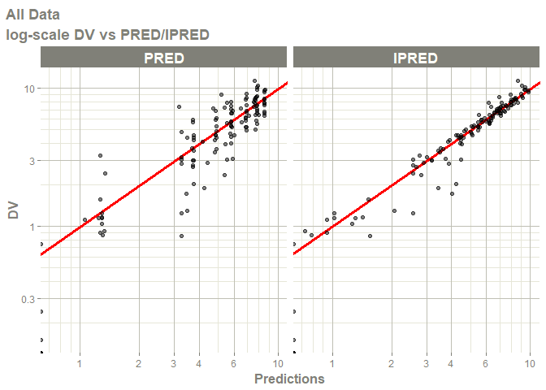
#> Warning in ggplot2::scale_x_log10(..., breaks = breaks, minor_breaks =
#> minor_breaks, : log-10 transformation introduced infinite values. 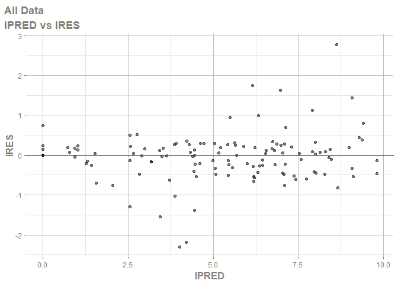
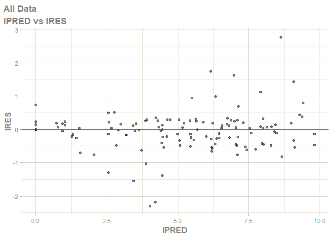
#> Warning in ggplot2::scale_x_log10(..., breaks = breaks, minor_breaks =
#> minor_breaks, : log-10 transformation introduced infinite values.

#> Warning in ggplot2::scale_x_log10(..., breaks = breaks, minor_breaks =
#> minor_breaks, : log-10 transformation introduced infinite values. 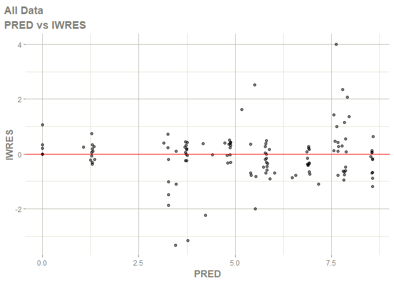
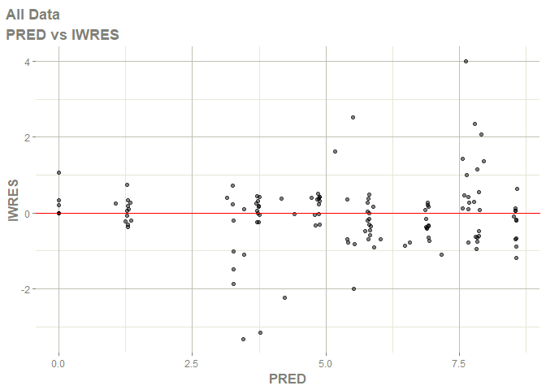
#> Warning in ggplot2::scale_x_log10(..., breaks = breaks, minor_breaks =
#> minor_breaks, : log-10 transformation introduced infinite values.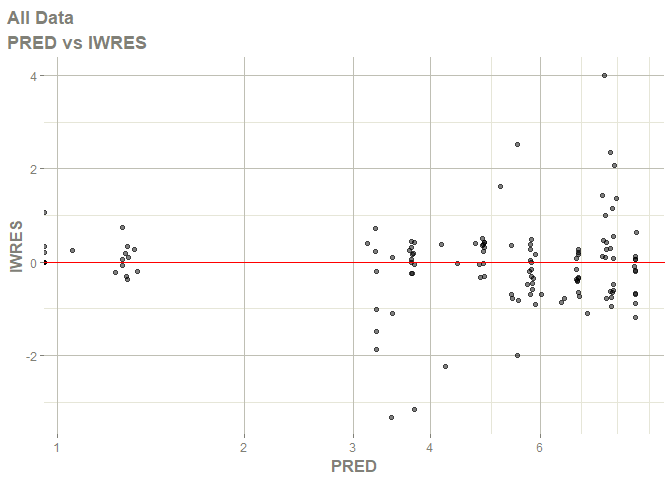
#> Warning in ggplot2::scale_x_log10(..., breaks = breaks, minor_breaks =
#> minor_breaks, : log-10 transformation introduced infinite values.

#> Warning in ggplot2::scale_x_log10(..., breaks = breaks, minor_breaks =
#> minor_breaks, : log-10 transformation introduced infinite values.

#> Warning in ggplot2::scale_x_log10(..., breaks = breaks, minor_breaks =
#> minor_breaks, : log-10 transformation introduced infinite values.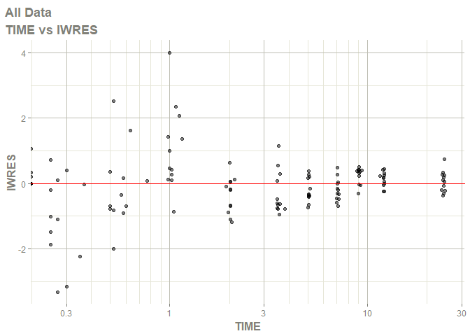
#> Warning in ggplot2::scale_x_log10(..., breaks = breaks, minor_breaks =
#> minor_breaks, : log-10 transformation introduced infinite values. 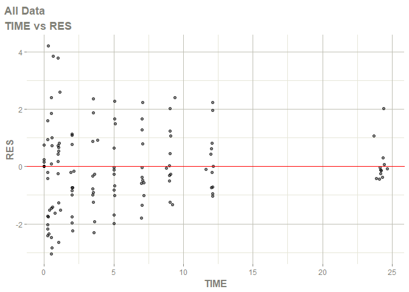
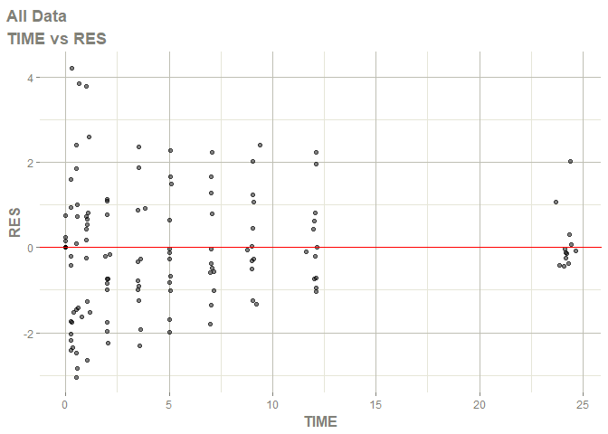
#> Warning in ggplot2::scale_x_log10(..., breaks = breaks, minor_breaks =
#> minor_breaks, : log-10 transformation introduced infinite values.

#> Warning in ggplot2::scale_x_log10(..., breaks = breaks, minor_breaks =
#> minor_breaks, : log-10 transformation introduced infinite values.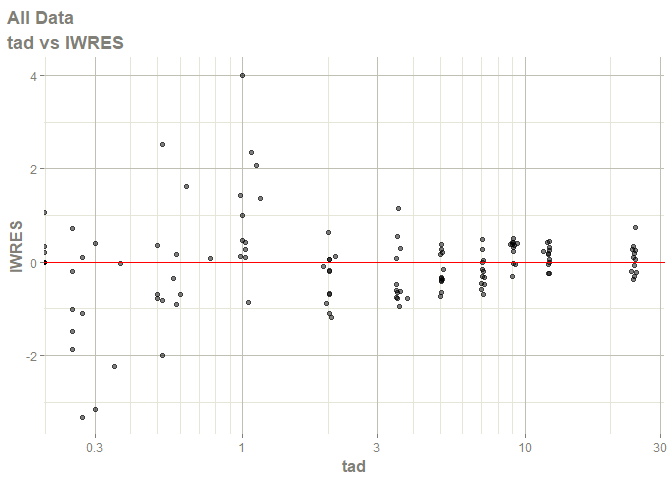
#> Warning in ggplot2::scale_x_log10(..., breaks = breaks, minor_breaks =
#> minor_breaks, : log-10 transformation introduced infinite values. 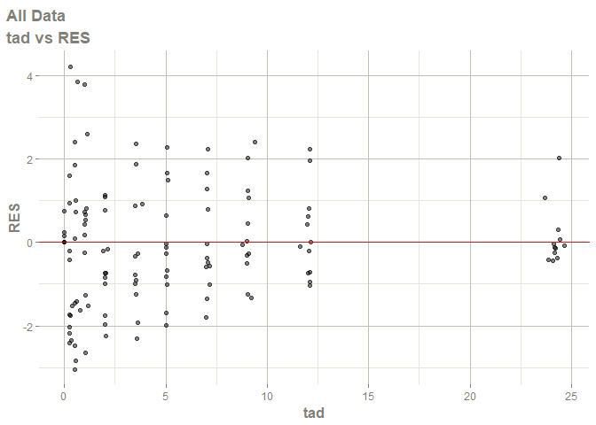
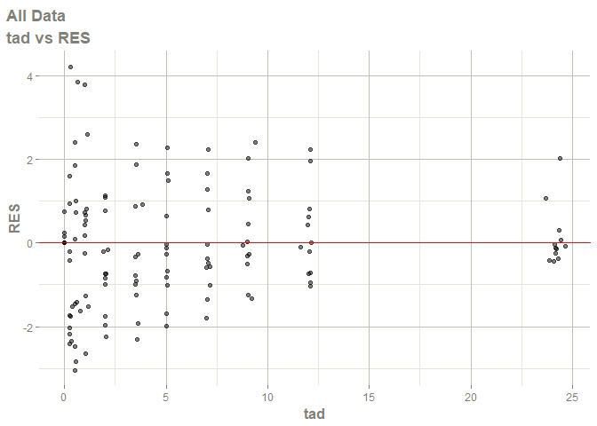
#> Warning in ggplot2::scale_x_log10(..., breaks = breaks, minor_breaks =
#> minor_breaks, : log-10 transformation introduced infinite values.